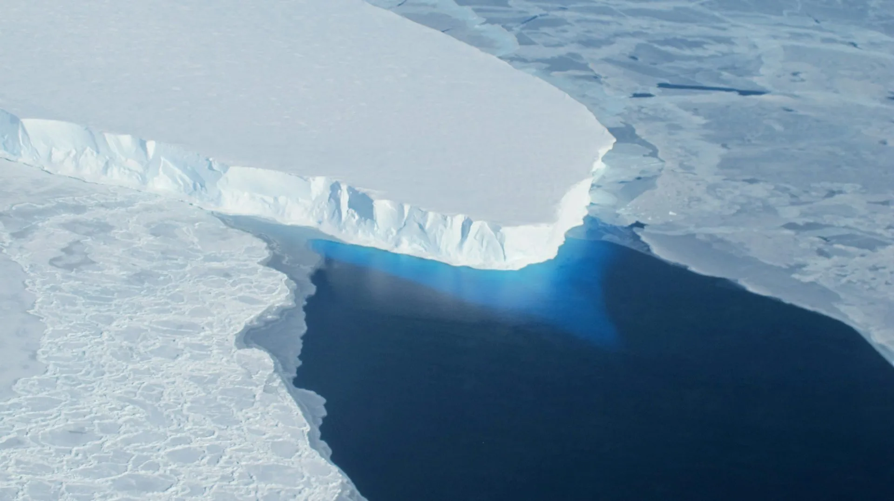

Happy Monday! Thank you very much for supporting the Daily Bulletin. If you want to provide any suggestions, feel free to fill this form. Please note that this is supplementary to The Week Ahead: please still check The Week Ahead for official information. By default, we will deliver a similar email to your inbox every day; if you no longer wish to receive this email anymore, please unsubscribe. Thank you!
周一快乐！感谢您支持每日公告。如果您想提出建议，请填写这个问卷。请注意，每日公告只是每周展望的补充，若想获得官方信息，请继续查阅每周展望。我们每天都会向您的收件箱投递一封类似的邮件；如果您不想继续接收每日公告，请取消订阅。谢谢！
Exam Reminders 考试计划
| Day | Y9 | Y11 |
|---|---|---|
| Mon | Physics | Biology P1 & P2 |
| — | — | |
| Mathematics PB | Chemistry P1 & P2 | |
| Tue | — | — |
| Mathematics P3 | ||
| Mathematics P2 | ||
| + |
Disclaimer: We do not guarantee that the information here is correct. Please consult your teacher if you are unsure. If you discover any errors, please fill this form.
声明：我们不保证此处展示的信息的准确性。如果您不确定，请咨询您的老师。如果您发现了任何问题，请填写这个问卷。
Community Time 午休时间
| Day | Y9 | Y10 | Y11 |
|---|---|---|---|
| Mon | Exams | Exams | Exams |
| Tue | Service Learning Day Pre-trip Meeting | ||
| Wed | HOHs Meet with Tutors | ||
| Thu | Tutor Time | TOK Exhibition | |
| + |
Delicious Dinings 今日佳肴
| Day | Taste of Asia | Eat Global | Revolution | Morning Snack | ||||
|---|---|---|---|---|---|---|---|---|
| Mon | Shaomai 三鲜烧麦 |
Shallot Pancake 葱油饼 |
Boiled Egg 白煮蛋 |
Egg, Tomato, Beef and Cheese Pancake 鸡蛋番茄肉酱芝士饼 |
Oatmeal 麦片粥 |
Roast Sweet Potato 烤红薯 |
— | Butter Croissant 羊角 |
| Tue | Beef Patties 牛肉葱油煎饼 |
Brown Sugar Bun 红糖馒头 |
Pickled Turnip with Egg 萝卜干炒蛋 |
Broccoli 西兰花 |
Sunny-side-up 太阳蛋 |
Lyonnais Sausage 里昂那肠 |
Pork with Rice Noodles and Egg 鸡蛋猪肉丝炒河粉 |
Custard Bun 奶黄包 |
| Wed | Dried Plum Vegetable Pancake 梅干菜饼 |
Steamed Twisted Roll with Scallions / Shandong Pancake 葱油花卷 / 山东煎饼 |
Steamed Egg 蒸鸡蛋 |
Roasted Mushroom 烤香菇 |
Benedict Egg & Hollandaise Sauce 班尼迪克蛋配培根菠菜 & 荷兰酱 |
Corn 玉米棒 |
Celery and Pork Dumplings 芹菜猪肉饺子 |
Chocolate Bread 巧克力面包 |
| Thu | Steamed Meat Dumplings 小笼包 |
Sausage and Vegetable Burritos 手工火腿蔬菜卷饼 |
Fried Egg 外婆菜炒鸡蛋 |
Mixed Beans 烩混合豆 |
Shakshuka 北非蛋 |
Prague style ham 布拉格风味火腿 |
Stir-Fried Rice with Shredded Chicken in Soy Sauce 酱油鸡丝炒饭 |
Plain Muffin 原味麦芬 |
| Fri | Shanghai Fried Dumplings 手指锅贴 |
Rice Cake / Rice Roll 松糕 / 粢饭团 |
Tea Egg 茶叶蛋 |
Baked Tomato 焗番茄 |
Baked Eggs with Cheese Shrimp on Toast 芝士虾仁吐司烘蛋 |
Baked Beans 茄汁焗豆 |
Pork and Preserved Vegetable Noodles 雪菜肉丝面 |
Shaomai 烧麦 |
| + | ||||||||
| Day | Taste of Asia | Eat Global | Revolution | Piccola Italia | Vegetarian | Afternoon Snack | ||
|---|---|---|---|---|---|---|---|---|
| Mon | Sautéed Shredded Pork in Sweet Bean Sauce 京酱肉丝 |
Organic Cauliflower with Chicken Slices 干锅鸡肉有机花菜 |
Chicken Cordon Bleu 蓝带鸡排 |
Green Peas 青豆 |
Seafood Noodles 海鲜汤面 / 白煮蛋 |
Penne with Basil, Tomato and Chicken 两头配鸡肉番茄罗勒汁 |
Fried Rice Noodle 豆芽鸡蛋炒河粉 |
Matcha Cake 抹茶蛋糕 |
| Tue | Duck with Brown Sauce in Shanghai Style 本帮酱鸭 |
Yuxiang Flavor Eggplant with Shredded Pork 鱼香茄子配猪肉 |
Grilled Fish with Cream Mushroom Sause 扒鱼柳配奶油蘑菇汁 |
Grilled Zucchini 烤佛手瓜 |
Braised Pork Rib Noodles 红烧排骨面 / 卤干 |
Sausage Risotto 香肠烩饭 |
Creamy Pumpkin Spaghetti 奶油南瓜意大利通心粉 |
Seafood Pancake 海鲜饼 |
| Wed | Steamed Fish with Black Bean 豆豉三丝蒸鱼块 |
Fried Pork Slices with Vegetables 农家小炒肉 |
Pork Piccatta 意大利米兰炸猪排 |
Provence Stew 普罗旺斯炖菜 |
Spiced Chicken Leg Noodles 五香鸡腿面 / 卤蛋 |
Penne Amatriciana 奶油培根番茄意面 |
Vegetarian Dumplings 素饺子 |
Roasted Bread with Ham and Cheese 火腿芝士三明治 |
| Thu | Stir-fried Chicken Wings with Chili 辣子鸡翅 |
Fried Eggplant, Potatoes and Green Pepper with Pork Slices 地三鲜炒肉片 |
Korean Roast Streaky Pork 韩式烤五花肉 |
Purple Cabbage 紫甘蓝 |
Noodles with Fish and Tomatoes 番茄红汤鱼面 / 煎鸡蛋 / 青菜 |
Pepperoni Pizza / Chicken Nuggets 意式火腿披萨 / 鸡块 |
Vegetable Curry Chickpea with Rice 咖喱蔬菜鹰嘴豆 / 米饭 |
Dumplings 小肉包 |
| Fri | Steamed Pork with Rice Flour 荔浦芋头粉蒸肉 |
Scrambled Eggs with Tomatoes 番茄炒鸡蛋 |
Chicken Cacciatore 意大利猎人烩鸡 |
Roasted Baby Cabbage 烤娃娃菜 |
Braised Beef Noodles 酸菜牛肉拉面 / 油豆腐 |
Tomato Shrimps Vegetable Pasta 番茄虾仁蔬菜意面 |
Zucchini Pancakes with Tomato Salsa 西葫芦煎饼配番茄沙沙 |
Crispy Cake 豆沙香酥饼 |
| + | ||||||||
| Day | Taste of Asia | Eat Global | Revolution | Piccola Italia | Vegetarian | Evening Snack | ||
|---|---|---|---|---|---|---|---|---|
| Mon | Stewed Fish Slices with Tomato Sauce 茄汁烩鱼片 |
Pork with Chinese Cabbage 烂糊猪肉丝 |
Polish Apple Roast Duck 波兰苹果烤鸭 |
Roasted Mushroom 烤蘑菇 |
Hot Oiled Chili Noodles with Pork 猪肉油泼面 / 鹌鹑蛋 |
Macaroni with Mushroom Sauce and Beef Ball 焗弯管面配蘑菇汁牛肉丸子 |
Stir-fried Tofu with Rice 麻辣株肉豆腐配米饭 |
Fruit & Fruit Yogurt 水果 & 果味酸奶 |
| Tue | Fried Chicken with Scallion Oil Sauce 广东葱姜捞鸡 |
Sliced Pork with Green Pepper Water Bamboo 青椒茭白猪肉片 |
BBQ Pork 烤猪肉 |
Celery 西芹 |
Noodles with Fried Shrimps and Eggs 什锦虾仁面 / 素鸡 |
Mexican Pork Quesadillas 墨西哥猪肉饼 |
Spanish Omelet 西班牙土豆鸡蛋饼 |
Fruit & Yogurt 水果 & 酸奶 |
| Wed | Tofu Skin Rolls with Minced Pork 鸡汁百叶包肉 |
Dry Pot Chiba Tofu with Chicken 干锅千叶豆腐 / 鸡肉 |
Thai Style Green Curry Fish 泰式青咖喱鱼 |
Roasted Eggplant 烤茄子 |
Noodles with Braised Duck Leg 酱鸭腿面 / 煎鸡蛋 |
Pasta with Tomato Sauce and Chicken 两头尖配番茄酱 / 鸡肉 |
Sweet and Sour Z-Rou Meatballs 酸甜株肉丸 |
Fruit & Chocolate Soy Milk 水果 & 巧克力豆奶 |
| Thu | Deep-Fried Shrimps with Spicy Salt 椒盐基围虾 |
Shrimp Steamed Egg 虾仁蒸蛋 |
Moroccan Slow-cooked Lamb 摩洛哥慢炖羊肉 |
Broccoli 西兰花 |
Japanese Style Pork Udon Noodles 日式猪肉乌冬面 / 油豆腐 |
Braised Chicken Breast Sandwich with Vietnamese Sauce 越南酱烧鸡胸三明治 |
Oven Baked Tomato with Couscous 焗番茄配中东米 / 番茄炒蛋 |
Fruit & Yogurt 水果 & 酸奶 |
| + | ||||||||
Daily Inspiration 每日灵感
Quote of the Day 每日引言
This is a disaster. Look at the air, listen to the buzzing of the sun, the same as yesterday and the day before. Today is Monday too.
— José Arcadio Buendía
Excerpt from A Hundred Years of Solitude by Gabriel García Márquez. Shared by Albert Tan.
选自加西亚·马尔克斯《百年孤独》。由 Albert Tan 分享。
Environmental News of the Day 每日环境新闻
Geologists show evidence that warm, high-pressure seawater is intruding miles beneath the grounded ice of Thwaites Glacier in West Antarctica, causing "intense melting" of the glacier.
The subtle difference in freezing point between seawater and freshwater can have a vigorous impact to the melting of the glacier’s basal ice.
Thwaites Glacier contains the equivalent of 60 cm of global sea level rise, suggesting that the rate of change may be faster than previously thought, posing a major threat to coastal communities worldwide.
Shared by Green Origin.
由 Green Origin 社团分享。
Poems of the Day 每日诗歌
Tryst of June: Monthly Poetry
OrangeCat Lab · WeChat
On This Day 以史为鉴
June 3: Anniversary of Khomeini's Death in Iran (1989); Martyrs Day in Uganda
6月3日：
- 1602 – Anglo-Spanish War: An English naval force defeated a Spanish-Portuguese fleet off Sesimbra, Portugal, and captured a carrack.
- 1844 – The last known pair of great auks, the only modern species in the genus Pinguinus of flightless birds, were killed on Eldey, Iceland.
- 1968 – American radical feminist Valerie Solanas shot and wounded visual artist Andy Warhol and two others at Warhol's New York City studio, The Factory.
- 1973 – At the Paris Air Show, a Tupolev Tu-144 broke up in mid-air, killing all six members of its crew and eight bystanders on the ground.
- 1979 – Having invaded Uganda and deposed President Idi Amin, Tanzanian forces secured Uganda's western border, ending a seven-month war.
- 1621年 – 荷兰共和国仿效东印度公司模式而成立西印度公司，并特许在加勒比地区展开贸易。
- 1839年 – 中国清朝钦差大臣林则徐在虎门公开销毁英国商人的1.9万箱鸦片，引发第一次鸦片战争。
- 1937年 – 已经退位的前英国国王爱德华八世与美国名流沃利斯·辛普森在法国图尔举行婚礼。
- 1998年 – 德国一部从慕尼黑驶往汉堡的城际快车在下萨克森发生出轨事故，造成101人死亡。
- 2006年 – 黑山国会宣布依照公投结果而正式独立，塞尔维亚和黑山自此解体。
Births and Deaths: Staurakios (d. 800); Georges Bizet (d. 1875); Susannah Constantine (b. 1962)
Fetched from Wikipedia.
选自维基百科。
In the News 时事要闻
- Former U.S. president Donald Trump is found guilty on all 34 counts of falsifying business records.
- In Indy car racing, Josef Newgarden wins the Indianapolis 500.
- In cricket, the Kolkata Knight Riders defeat Sunrisers Hyderabad to win the Indian Premier League.
- Gitanas Nausėda is re-elected as president of Lithuania.
- A landslide in Papua New Guinea's Enga Province leaves thousands of people missing and presumed dead.
- 美国纽约州最高法院裁定前总统唐纳德·特朗普在封口费丑闻中涉及的伪造商业纪录刑事罪名全数成立，使其成为首位遭定罪的前总统。
- 美国喜剧剧情片《阿诺拉》获得第77届戛纳电影节金棕榈奖。
- 巴布亚新几内亚恩加省发生山体滑坡，造成至少6人死亡、7人受伤、2,500余人失踪。
- 中国人民解放军东部战区在台湾本岛及台湾海峡周边发起“联合利剑—2024A”演习。
- 穆罕默德·代比就任为乍得总统。
Ongoing: Israel–Hamas war; Russian invasion of Ukraine; Sudanese civil war
Recent deaths: Alan Choe; Hugues Gall; Richard Ellis; Larry R. Hicks; Richard M. Sherman; Destiny Deacon
正在发生：俄罗斯入侵乌克兰；以哈战争；红海危机
最近逝世：凯文·爱德华·菲利克斯；比尔·沃顿；颜国梁；Kabosu；摩根·斯珀洛克
Fetched from Wikipedia.
选自维基百科。